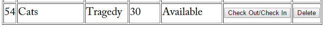
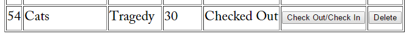

We need a way to update our video database, updating with PDO is straightforward. Using PDO format, we can create a function to update which contains an object
accessing the instance query. Below you will see the toggle_checkout($id) that uses an object to access the update of the query.
Note that the only syntactical difference between the PDO and MySQLi API's in this case is the instance placed between $this and query.
The same can be said for the delete format in PDO versus MySQLi. And here we have our functions necessary to delete either one or all videos from the database.
Lets take another look at the user view of the database to see the update from their point of view. The picture here shows an entry in the video database, and you can see that Cats is Avaialable to checkout.
By selecting the button on the right for the checkin/out option, the video will be updated via our PDO update code we discussed above. Now, Cats is not avaialable in inventory and the video has been correctly updated.
So far for our PDO example we have connected to the MySQL database, inserted with PDO into the database, and seen how to update and delete the database. Next we will take a look at fetching from the video database with PDO.